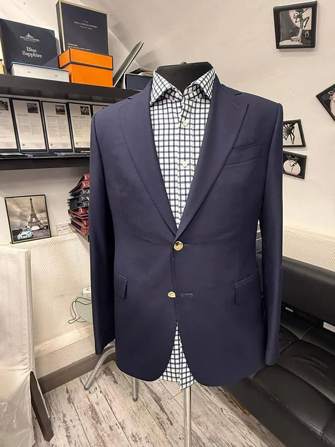
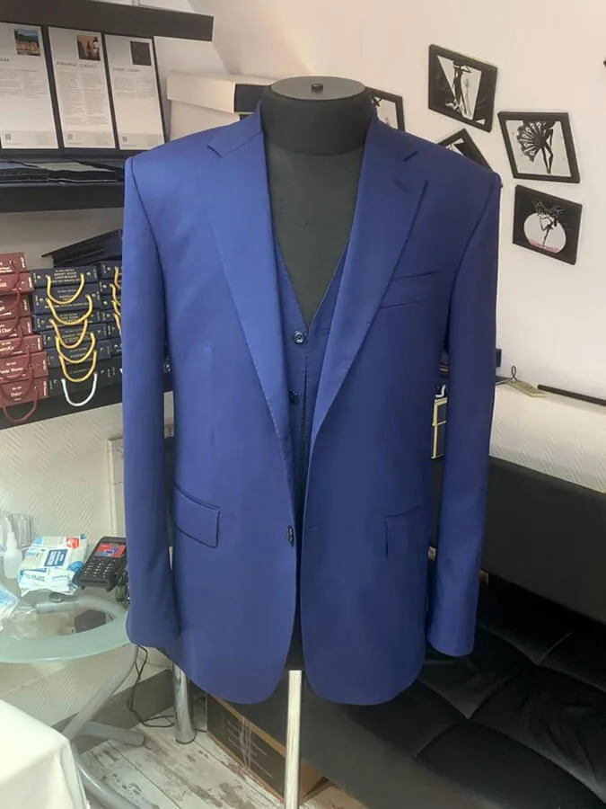
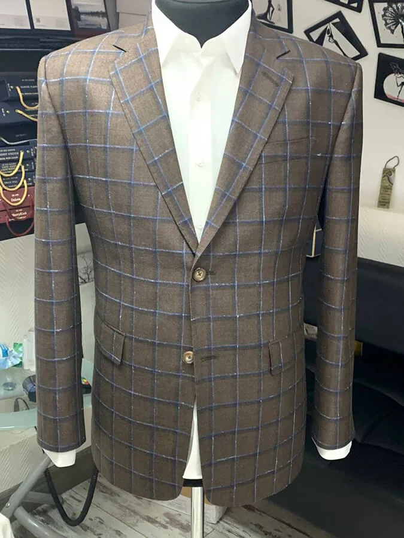
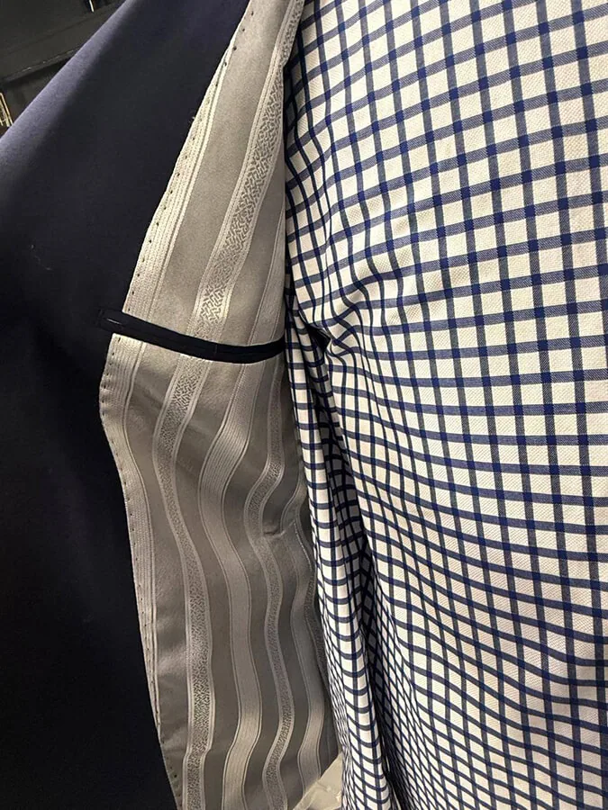

Галерея ателье
Наши работы
Примерки, готовые изделия на манекенах и отделка вблизи. Выберите снимок, который хотите обсудить с портным.
Работ в галерее — 20














Собрать свой вариант
Начните с изделия, затем выберите ткань для первой встречи.